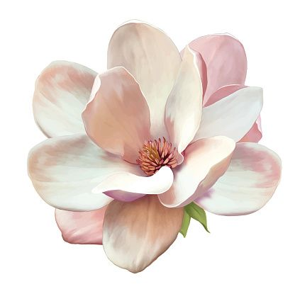

Document
BIG Butch The Florist
About Me
My first Blogpost.
My second Blogpost.
My third Blogpost.
My fourth Blogpost.
My fifth Blogpost.
A friendly reminder on animal cruelty by The Humane Society of the United States
Some Articles I Hope You Enjoy As Much As I Did
5 VIRTUAL TOURS OF WORLD-FAMOUS GARDENS by SA Garden & Home

IMMUNE BOOSTING HERBS AND VEGGIES by SA Garden & Home

ATTRACTING BIRDS TO SMALL GARDENS by SA Garden & Home

GROWING STRAWBERRIES by SA Garden & Home

COUNTRY GARDEN by SA Garden & Home

GROWING POPPIES by SA Garden & Home

by Butch,
your friendly neighborhood florist